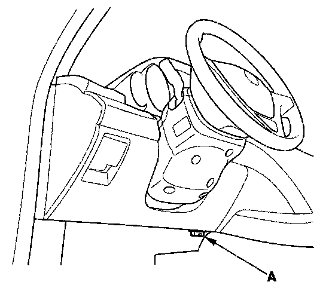

ODS Unit Calibration
ODS Unit CalibrationWhen you replace the SRS unit, front passenger's weight sensors, or the ODS unit, calibrate the ODS unit.
While calibrating the ODS unit, observe these precautions:
- Make sure all components of the front passenger's seat are correctly installed.
- Make sure nothing is on or under the front passenger's seat.
- Make sure there is nothing in the front passenger's seat-back pocket.
- Do the windows closed.
- Do all calibration procedures, except test-driving, in the service bay.
- Make sure the vehicle is on level ground.
- Keep the A/C and the heater off.
- Do not touch the front passenger's seat while you drive the vehicle.
- Do not expose the front passenger's seat to sudden temperature changes.
1. Position the front passenger's seat to the rearmost position, and adjust the recliner to the most forward position. Do not move the seat from these positions.

2. Connect the HDS to the data link connector (DLC) (A).
3. Make sure the HDS communicates with the vehicle and the SRS unit. If it does not, troubleshoot the DLC circuit.
4. Drive the vehicle, and accelerate to 20 mph (36 km/h), then stop on level ground.
5. From the Main Menu, select SRS, then Calibration, then Misc Test, then select "SWS INITIALIZATION," and follow the prompts until the initialization operation has been completed.